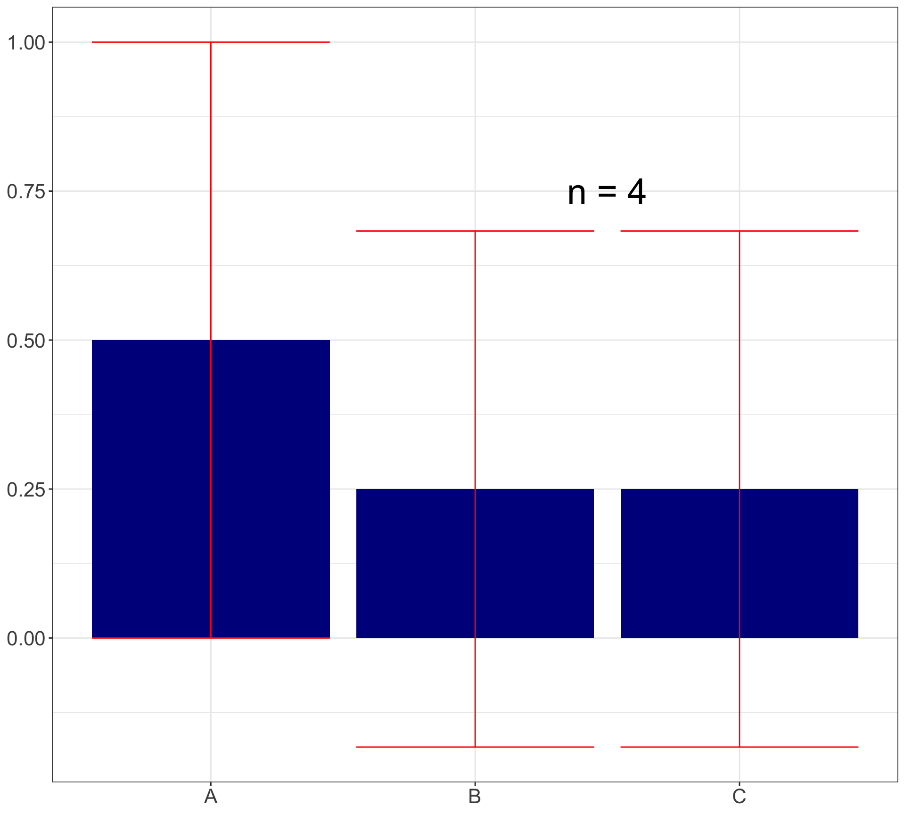

Power and multiple testing
Prof Ron Yurko
2025-01-27
Announcements, previously, and today…
HW1 is due this Wednesday Jan 29 by 11:59 PM
You have Lab 3 again on Friday
Office hours schedule:
My office hours (BH 132D): Wednesdays and Thursdays @ 2 PM
Anna (zoom): Mondays @ 2 PM; and Perry (zoom): Wednesdays @ 11 AM
Main estimators: \(\underbrace{\hat{p}_1,\dots,\hat{p}_K}_{\text{proportions}}\) for \(K\)-many categories
Chi-square test is the main statistical test for 1D categorical data, tests \(H_0: p_1 = \cdots = p_K\)
Can also make confidence intervals for \(\hat{p}_1,\dots,\hat{p}_K\) (just multiply CIs by \(n\))
TODAY:
- Interpreting CIs on graphs is tricky and have to be careful with multiple testing
Graphics versus Statistical Inference
- Reminder Anscombe’s Quartet: where statistical inference was the same but the graphics were very different

- The opposite can be true! Graphics are the same, but statistical inference is very different…
Example: 3 categories, \(p_A = 1/2,\ p_B = p_C = 1/4\)

Example: 3 categories, \(p_A = 1/2,\ p_B = p_C = 1/4\)
Example: 3 categories, \(p_A = 1/2,\ p_B = p_C = 1/4\)
Example: 3 categories, \(p_A = 1/2,\ p_B = p_C = 1/4\)

Power under this scenario: (2n/4, n/4, n/4)
How do we combine graphs with inference?
Simply add \(p\)-values (or other info) to graph via text
Add confidence intervals to the graph
Need to remember what each CI is for!
Our CIs on previous slides are for each \(\hat{p}_j\) marginally, NOT jointly
Have to be careful with multiple testing…
CIs will visually capture uncertainty in estimates

Rough rules for comparing CIs on bar charts
Comparing overlap of two CIs is NOT exactly the same as directly testing for a significant difference…
Really you want CI( \(\hat{p}_1 - \hat{p}_2\) ), not CI( \(\hat{p_1}\) ) and CI( \(\hat{p_2}\) )
CI( \(\hat{p_1}\) ) and CI( \(\hat{p_2}\) ) not overlapping implies \(0 \notin\) CI( \(\hat{p}_1 - \hat{p}_2\) )
However CI( \(\hat{p_1}\) ) and CI( \(\hat{p_2}\) ) overlapping DOES NOT imply \(0 \in\) CI( \(\hat{p}_1 - \hat{p}_2\) )
Roughly speaking:
If CIs don’t overlap \(\rightarrow\) significant difference
If CIs overlap a little \(\rightarrow\) ambiguous
If CIs overlap a lot \(\rightarrow\) no significant difference
But if we’re comparing more than two CIs simultaneously, we need to account for multiple testing!
- When you look for all non-overlapping CIs: making \(\binom{K}{2} = \frac{K!}{2!(K-2)!}\) pairwise tests in your head!
Corrections for multiple testing
In those bar plots, when we determine whether CIs overlap we make 3 comparisons:
A vs B
A vs C
B vs C
This is a multiple testing issue
In short: we will make Type 1 errors (chance of false rejecting) more than 5% of the time!
Reminder: Type 1 error = Rejecting \(H_0\) when \(H_0\) is true
e.g., CIs don’t overlap but actually \(H_0: p_A = p_B\) is true
If only interested in A vs B and nothing else, then just construct 95% CI for A vs B and control error rate at 5%
However, if we construct several CIs, where A vs B is just one comparison we make, our Type 1 error rate > 5%!
Corrections for multiple testing
Vast literature on corrections for multiple testing (beyond the scope of this class… but in my thesis!)
But you should understand the following:
Corrections for multiple testing inflate \(p\)-values (i.e., make them bigger)
Equivalently, they inflate CIs (i.e., make them wider)
Purpose of these corrections is to control Type 1 error rate \(\leq 5\%\)
We’ll focus on the Bonferroni correction, which inflates \(p\)-values the most but is easy to implement and very popular:
We usually reject null hypothesis when \(p\)-value \(\leq .05\)
Bonferroni: if making \(K\) comparisons, reject only if \(p\)-value \(\leq .05/K\)
For CIs: instead of plotting 95% CIs, we plot (1 - \(0.05/K\))% CIs
- e.g., for \(K = 3\) then plot 98.3% CIs
Impact of Bonferroni correction on CIs…
Recap and next steps
Graphs with the same trends can display very different statistical significance (largely due to sample size)
Can visualize CIs for each \(\hat{p}_1\), \(\dots\), \(\hat{p}_K\), but need to deal with multiple testing
HW1 is due Wednesday and you have Lab 3 on Friday!
Next time: Visualizations and inference for 2D categorical data
Recommended reading: CW Chapter 11 Visualizing nested proportions